Key Takeaways
- Controls how much disk space Recall can use for snapshots.
- You can choose the maximum storage limit.
- If not configured, Windows sets the storage size automatically.
- The default storage size depends on the device’s storage capacity.
Hey, let’s discuss about how to configure Recall Snapshot Storage to optimize device performance using Intune. This policy setting allows you to control the maximum amount of disk space that Windows can use to save snapshots for Recall. You can configure the maximum storage allocation to 10 GB, 25 GB, 50 GB, 75 GB, 100 GB, or 150 GB.
Table of Contents
Configure Recall Snapshot Storage to Optimize Device Performance using Intune
If this setting is not configured, Windows automatically configures the storage allocation for snapshots based on the device’s storage capacity, unless the current user specifies a different value. By default, 25 GB is allocated for devices with 256 GB of storage, 75 GB for devices with 512 GB, and 150 GB for devices with 1 TB or more of storage.
How to Create a Policy in Intune
Log in to the Microsoft Intune admin center and navigate to Devices from the left-hand menu. Within the Devices section, select Configuration. On the Configuration page, click New Policy to create a new configuration policy.

Create a Profile
A new window titled Create Profile will appear. In this window, set the Platform to Windows 10 and later and select Settings Catalog as the Profile Type. After configuring these options, click Create to continue the policy creation.

Basic Tab of Maximum Storage Space for Recall Snapshots Policy
After creating the profile, the next step is to enter the basic details. Specify the Name of the policy as Set Maximum Storage Space for Recall Snapshots and provide an appropriate Description(Set Maximum Storage Space for Recall Snapshots). Click Next to continue.
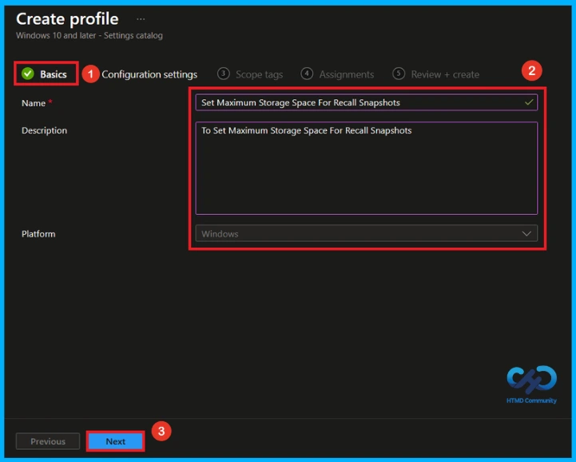
Configure Maximum Storage Space for Recall Snapshots
On this tab, click Add Settings. This will open a new window called Settings Picker. In the Settings Picker window, search for Maximum Storage using the search bar or select the Windows AI Category and Set Maximum Storage Space for Recall Snapshots settings.
| Category | Setting |
|---|---|
| Windows AI | Set Maximum Storage Space for Recall Snapshots |
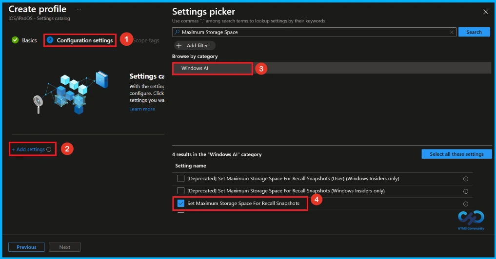
Default Settings of Maximum Storage Space for Recall Snapshots Policy
After closing the Settings Picker, the selected setting will appear on the Configuration Settings page. By default, Set Maximum Storage Space for Recall Snapshots is set to Let the OS define the maximum storage amount based on available hardware storage size.
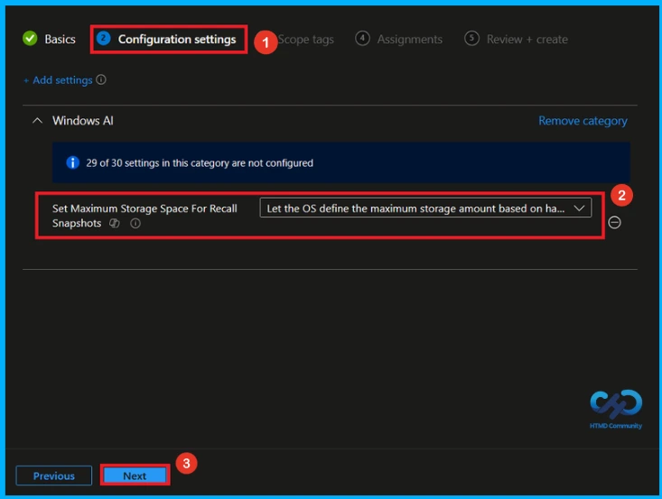
Configure Recall Snapshot Storage Limit
On the Configuration Settings page, click the drop-down menu for Set Maximum Storage Space for Recall Snapshots and select the maximum storage limit you want to allow. The available options include 10 GB, 25 GB, 50 GB, 75 GB, 100 GB, and 150 GB. Here, l selected 150GB. Click Next to continue.
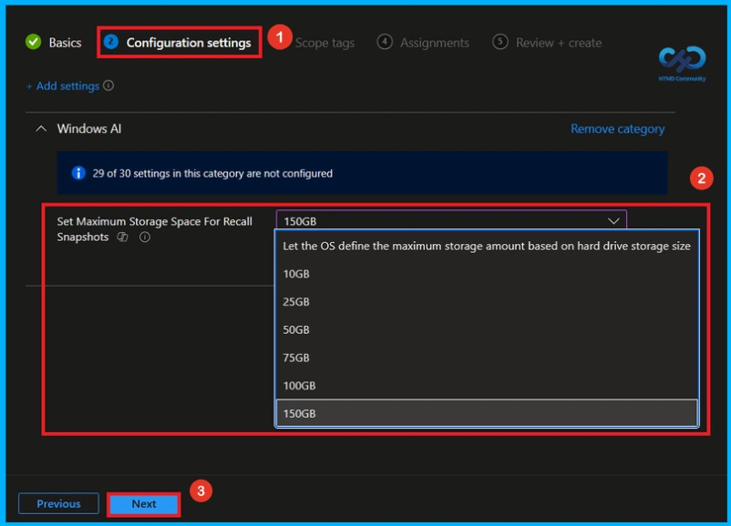
What is Scope Tag
The next section is the Scope tags, which is not a compulsory step. It helps assign the policy to a defined group of administrators. By default, no scope tags are assigned. If you do not want to configure scope tags, leave the section unchanged and click Next to continue.

Assignment Tab of Maximum Storage Space for Recall Snapshots Policy
The Assignments tab is a crucial step that determines which users or devices will receive the policy. Click + Add groups under Included groups, then select the required group (Eg HTMD _ Test Policy) from the list of available groups in your tenant. After the selected group appears on the Assignments page, click Next to continue.
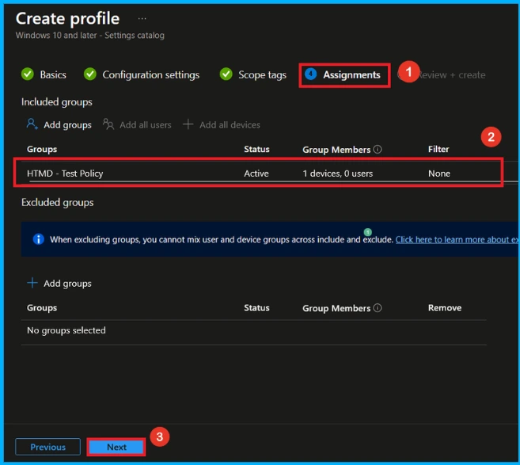
Review + Create Tab
Before completing the policy creation, you can review each tab to avoid misconfiguration or policy failure. After verifying all the details, click on the Create Button. After creating the policy, you will get a success message like “Set Maximum Storage Space For Recall Snapshot created successfully.
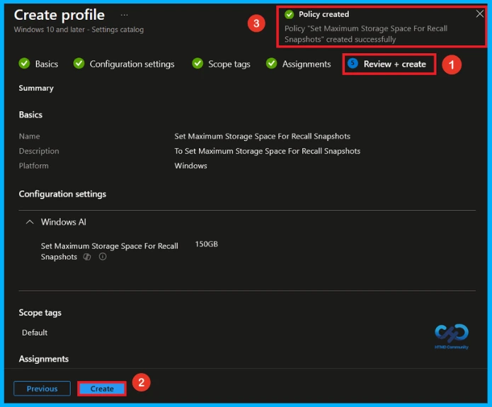
Device and User Check-in Status
To view the policy status, go to Devices > Configuration in the Intune admin center and select the Set Maximum Storage Space for Recall Snapshots policy. Check that the Device and user check-in status shows Succeeded. To apply the policy faster, manually sync the device from the Company Portal
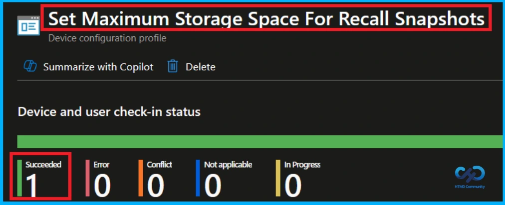
Client side Verification
To confirm if a policy has been applied, use the Event Viewer on the client device. Go to Applications and Services Logs > Microsoft > Windows > Device Management > Enterprise Diagnostic Provider > Admin. From the list of policies, use the Filter Current Log option and search for Intune event 813.
MDM PolicyManaqer: Set policy int, Policy: (SetMaximumStoraqeSpaceForRecallSnapshots , Area:
(WindowsAl), EnrollmentID requestinq merqe: (EB42/D85-802F-46D9-A3E2-D5B41458/F05),
Current User: (Device), Int: (0x25800), Enrollment Type: (0x6), Scope: (0x0),
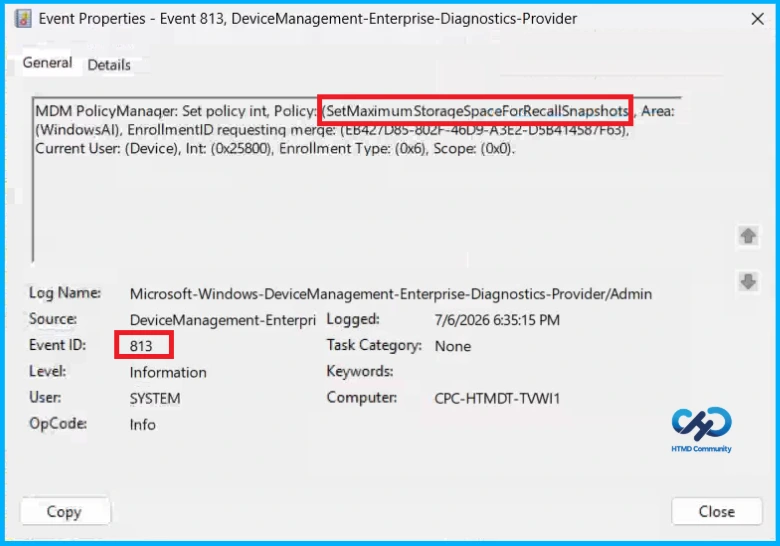
Windows Configuration Service Provider (CSP)
The Policy Configuration Service Provider (CSP) is a feature used by organisations to manage and control settings on Windows 10 and 11 devices. it explains the Description Framework Properties, Allowed values and Group policy mapping.
Description Framework Properties:
- Format – int
- Access Type – Add, Delete, Get, Replace
- Default Value – 0
| Value | Description |
|---|---|
| 0 (Default) | Let the OS define the maximum storage amount based on hard drive storage size. |
| 10240 | 10GB |
| 25600 | 25GB |
| 51200 | 50GB |
| 76800 | 75GB |
| 102400 | 100GB |
| 153600 | 150GB |
| Name | Value |
|---|---|
| Name | SetMaximumStorageSpaceForRecallSnapshots |
| Friendly Name | Set maximum storage for snapshots used by Recall |
| Location | Computer and User Configuration |
| Path | Windows Components > Windows AI |
| Registry Key Name | SOFTWARE\Policies\Microsoft\Windows\WindowsAI |
| Registry Value Name | SetMaximumStorageSpaceForRecallSnapshots |
| ADMX File Name | WindowsCopilot.admx |
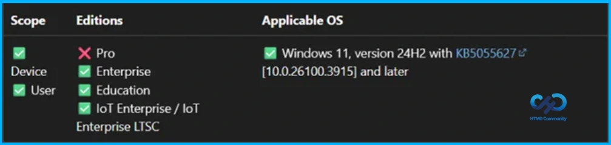
How to Remove Assigned Group from Maximum Storage for Recall Snapshots Policy
If you need to remove a group from a policy assignment for security updates. To do this, open Set Maximum Storage for Recall Snapshots Policy from the Configuration tab and click on the Edit button on the Assignment tab. Click on the Remove button on this section to remove the policy.
For detailed information, you can refer to our previous post – Learn How to Delete or Remove App Assignment from Intune using by Step-by-Step Guide.
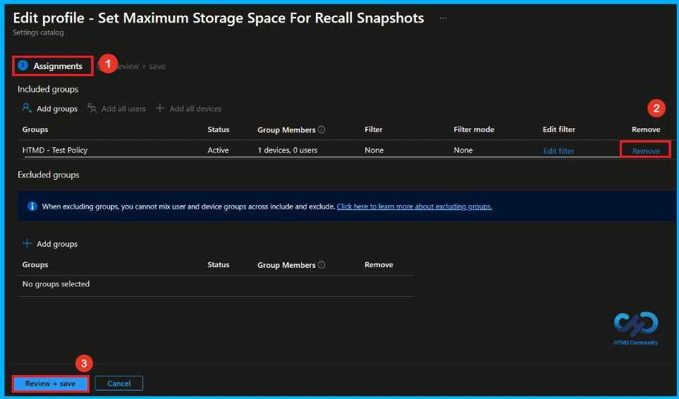
How to Delete Maximum Storage for Recall Snapshots Policy from Intune
Admins may delete policies in Intune for different reasons. If you want to quickly delete the Set Maximum Storage Space for Recall Snapshots policy, search for the policy in the Intune admin center. Click the three-dot menu next to the policy, then select Delete to remove it.
For detailed information, you can refer to our previous post – How to Delete Allow Clipboard History Policy in Intune Step by Step Guide.
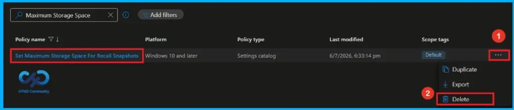
Need Further Assistance or Have Technical Questions?
Join the LinkedIn Page and Telegram group to get the latest step-by-step guides and news updates. Join our Meetup Page to participate in User group meetings. Also, join the WhatsApp Community and the Whatsapp channel to get the latest news on Microsoft Technologies. We are there on Reddit as well.
Author
Anoop C Nair has been Microsoft MVP from 2015 onwards for 10 consecutive years! He is a Workplace Solution Architect with more than 22+ years of experience in Workplace technologies. He is also a Blogger, Speaker, and Local User Group Community leader. His primary focus is on Device Management technologies like SCCM and Intune. He writes about technologies like Intune, SCCM, Windows, Cloud PC, Windows, Entra, Microsoft Security, Career, etc.